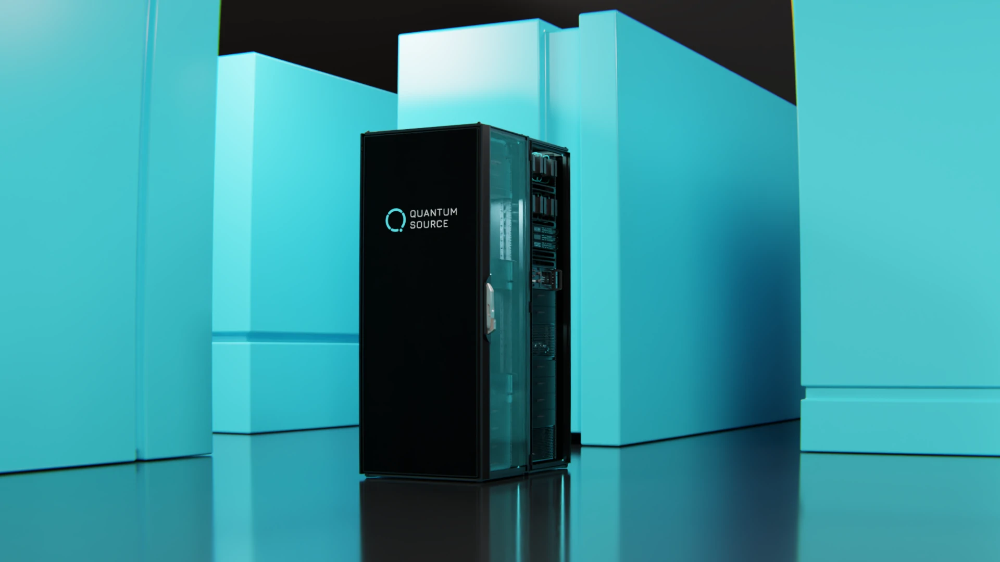

Practical quantum computing requires millions of qubits working together—a scale that demands a fundamentally different approach to system architecture.
Rather than building one impossibly large machine, ORIGIN units work together. Each unit generates small clusters of entangled photonic qubits, which are then "stitched" together into larger quantum structures. This fusion-based approach means computational power scales with the number of units deployed.